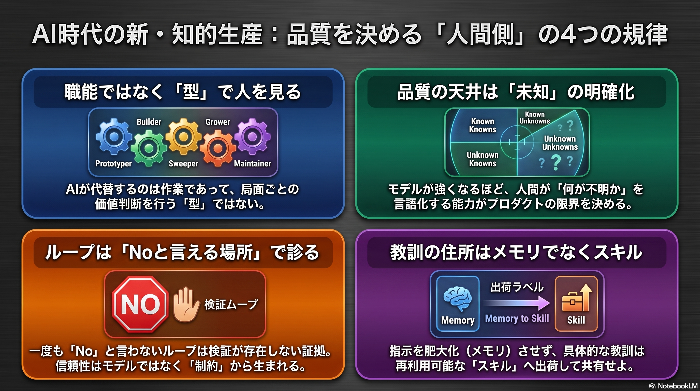
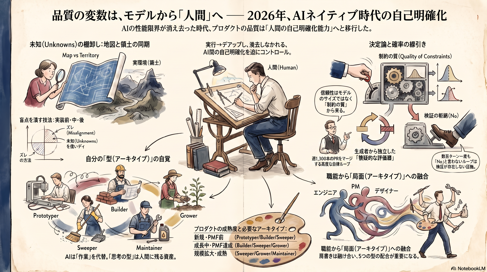

Weekly Insights: 2026-W28（2026-07-06〜07-12）
今週のホットトピック

- product-role-archetypes 職能でなく「型」で人を見る — Boris Chernyが観察した5アーキタイプ。AIが代替するのは作業であって型ではない（X bookmark 13,254）。
- finding-unknowns 品質の天井は自分のunknownsの明確化 — 地図（プロンプト）と領土（実環境）のずれを実装前・中・後で発見する技法集（Anthropic Thariq Shihipar発・X bookmark 11,745）。
- loop-anatomy ループは「noと言える箇所」で診断する — 1ターン＝5ムーブ、故障は欠落ムーブと1対1対応。stripe-minions が週1,300本PRの実証例（Addy Osmani枠組み）。
- skills-over-memory 教訓の住所はメモリでなくスキル — push/pullの切り分けと「この行は次に起きることを変えるか」基準（@mvanhorn・218→6ファイル）。
深掘り
product-role-archetypes 職能でなく「型」で人を見る
Claude Code作者のBoris Chernyが、エンジニア・PM・デザイン・DSといった職能が一つの新しい役割へ融け合う現場で、仕事は Prototyper / Builder / Sweeper / Grower / Maintainer の5つの型に分かれると観察した。重要なのは型が職種に紐づかず、プロダクトの段階ごとに必要な配合が変わる点で、二次解説の@genmai_tokyoはこれを「AIが代替するのは作業であって型ではない」というキャリア論へ拡張する。リスクを取るPrototyperの判断とリスクを排除するMaintainerの判断は真逆であり、AIで一人が何役もこなせる時代にこそ「自分の型」の自覚が資産になる。
finding-unknowns 品質の天井は自分のunknownsの明確化
AnthropicのThariq Shihiparが、プロンプト（地図）と実環境（領土）のずれ＝unknownsを4象限で棚卸しし、実装前（ブラインドスポットパス・HTMLプロトタイプ・インタビュー）・実装中（実装ノート）・実装後（ピッチ資料・クイズ）で体系的に発見する技法集を公開した。核心は「Fableは仕事の質が自分のunknownsを明確化する能力でボトルネックになる最初のモデル」という本人の評価で、モデルが強くなるほど品質の変数が人間側へ移ることを、Claude Code開発の当事者が技法込みで明言した点に価値がある。
loop-anatomy ループは「noと言える箇所」で診断する
ループの1ターンを発見→引き渡し→検証→永続化→スケジュールの5ムーブに分解し、故障を「どのムーブが欠けたか」で1対1診断する枠組み（一次発信はGoogleのAddy Osmani）。最難関は生成者から分離した「noと言える検証」の設置で、数百ターン一度もnoと言っていないループは検証が存在しない証拠と断じる。Stripeが週1,300本のマシン生成PRをマージする実運用 stripe-minions はその実証にあたり、Stripeエンジニアの Steve Kaliski は「信頼性はモデルのサイズではなく制約の質から来る」——決定論で解けるものを確率モデルに渡さない線引きこそが信頼性を決める、と述べる。
skills-over-memory 教訓の住所はメモリでなくスキル
@mvanhornがエージェントのメモリを218ファイルから6ファイルへ削った経験から、毎セッション勝手に注入されるpush層（CLAUDE.md・auto-memory）と必要なときだけ引くpull層を切り分け、スキル固有の教訓はメモリに書き溜めずスキルへPRせよと主張する（スキルに入ればバージョン管理され、同じスキルを使う全員に効く）。同じ週に、GoogleがADK専門知を7つのスキルとしてコーディングエージェントへ注入する google-agents-cli を出し、@ai_jitanが蔵書を「必要なとき問いを返すメンター」へ変える notebooklm-book-mentors を公開した。知識は常時ロードするものではなく、住所（スキル・ソース）を持ち必要なときに引かれるものへ——という配布単位の転換が3ページで揃った。
今週の中心テーマ
品質のボトルネックがモデル性能から、人間側の「自己明確化」——自分の未知（unknowns）、自分の型（アーキタイプ）、決定論と確率の線引き——へ移った。

根拠ページ
- product-role-archetypes（→ 今週のホットトピック#1）
- finding-unknowns（→ 今週のホットトピック#2）
- loop-anatomy（→ 今週のホットトピック#3）
- skills-over-memory（→ 今週のホットトピック#4）
- stripe-minions — 5ムーブ全装備のエンタープライズ実証。決定論ゲート×LLM交互配置で週1,300本のPRを人間レビュー付きでマージ（Stripe一次発信）
- google-agents-cli — ADK専門知を7スキルとして注入し、デプロイ前evalを1プロンプトで自動生成するCLI（bm 2,655）
- notebooklm-book-mentors — 積読本の原本をNotebookLMに入れ「答えでなく問いを返す」メンターに変える読書術（bm 3,041）
- founders-playbook — 創業者をオーケストレーター化するAnthropic公式プレイブック（先週の根拠ページの続き。4段階の卒業条件・PMF測定枠組みを収録）
既存wikiとの接続
- agentic-coding — finding-unknownsは「unknownsの削減と計画」をagentic codingの中核スキルと位置づける。被参照49件のハブに今週の「人間側ボトルネック」論が接続され、上位概念の中身が具体技法で埋まった。
- loop-engineering — loop-anatomy・stripe-minionsの親概念。構築前の4条件テスト（loop-engineering）と構築後の5ムーブ診断（loop-anatomy）を合わせると、事前判定→事後解剖が1枚の運用チェックリストになる。
- self-refining-skills — skills-over-memoryの「教訓をスキルへ出荷」は、LESSONS.md方式としてこのwikiが既に部分実装しているパターンの一般化。逆に「メモリ側を削る」規律はまだ実装していない残り半分にあたる。
sugeta-san への問い
今週の技法——ブラインドスポットパス、実装前インタビュー、5ムーブ監査——のうち、あなたの運用でまだ「個人技」のまま、スキル・工程として言語化されていないものはどれですか。
→ finding-unknownsの技法群はThariq個人の実践として紹介されていますが、skills-over-memoryの「教訓はスキルへ出荷」を当てれば、たとえばブラインドスポットパスは新領域のingestやスキル設計の前工程としてSKILL.mdに落とせます。「AI活用を個人技で終わらせず再現可能な能力へ」という観点では、まず一つ選んで工程化するのが今週の素材の自然な使い道です。
今週の小アクション（5分）
次にエージェントへ渡す大きめの仕事の前に、ブラインドスポットパスを1回試す: 「この依頼で私が見落としている unknown unknowns を洗い出して」とだけ先に依頼し、出てきた盲点で本題のプロンプトを1行改善する。
いますぐAIと一緒に（コピペ）
以下をそのまま Claude Code に貼って、「教訓の住所」を自分のメモリに当ててみてください。
あなたがこのプロジェクトで持つ auto-memory（MEMORY.md 索引と各メモリファイル）を読み、
skills-over-memory の3分類で仕分けしてください:
1. 各項目を trash（gitや完了記録が既に持つ）/ skill-tied（特定スキルの LESSONS.md へ
移すべき教訓）/ cross-cutting（複数スキルを横断して操舵する・残す）に分類
2. skill-tied と判定した項目について、移送先（例: .claude/skills/wiki-ingest/LESSONS.md）
への追記案を提示（実際の移動は提案のみ）
3. 判定基準「この行は次に起きることを変えるか」を各項目に適用した結果を1行ずつ添える
参照: wiki/concepts/skills-over-memory.md, wiki/concepts/self-refining-skills.md
さらに読むべきページ
- harness-engineering — loop-anatomyの1階下の層＝単発ランの武装。Generator/Evaluator分離の観察も既録で、今週の「ループの床は評価器」とセットで読むと層構造が繋がる。
- grill-me — finding-unknownsの「実装前インタビュー」技法の独立した最小実装（3行のAgent Skill）。今週の小アクションの次の一歩として5分で試せる。
- talent-to-value-ai — product-role-archetypesの「職能でなく局面で見る」を、価値の単位が「人＋エージェントのシステム」へ移る組織論に引き上げた既存ページ。